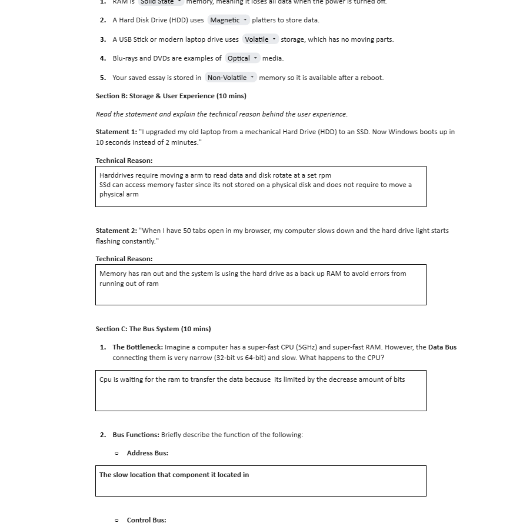
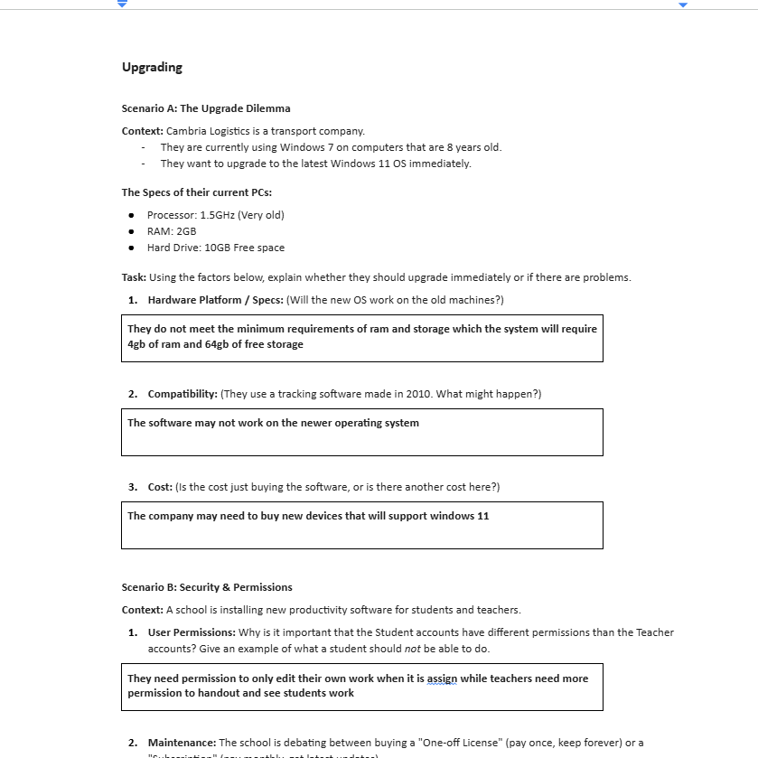

Home Page
unit 1
unit 2
unit 8
unit 13
unit 13 information
unit 14
unit 14 information

Technology systems are involved in many of the objects we use every day from a laptop computer and routers relaying internet traffic to logging in to a social networking site. This unit provides a first look at how the main building blocks of technology systems work.
You will explore the common hardware components of technology systems, such as a touch screen or a printer, and the internal building blocks of a computer like the processor, graphics card and memory. The unit also covers the purpose of networks, which allow different devices within a technology system to communicate.
